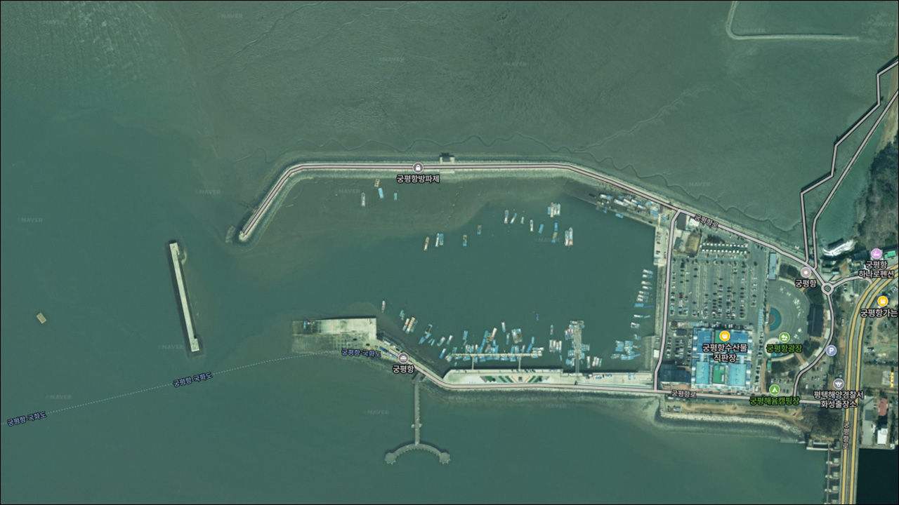
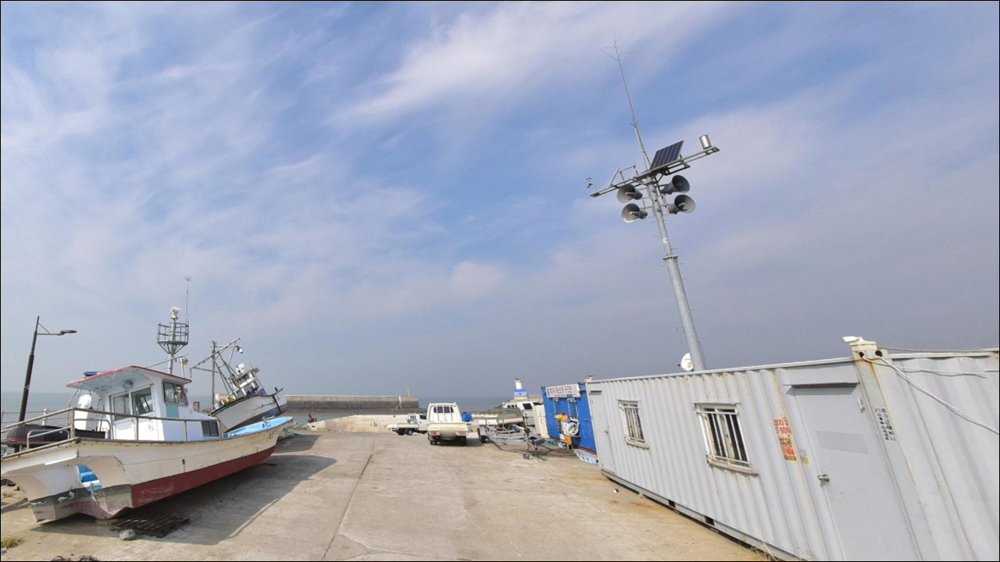
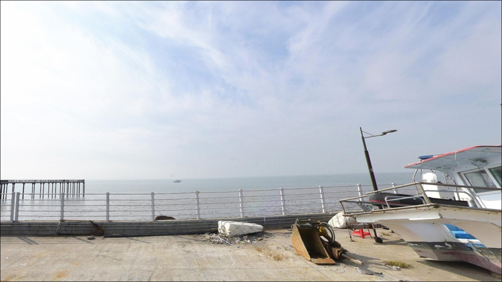
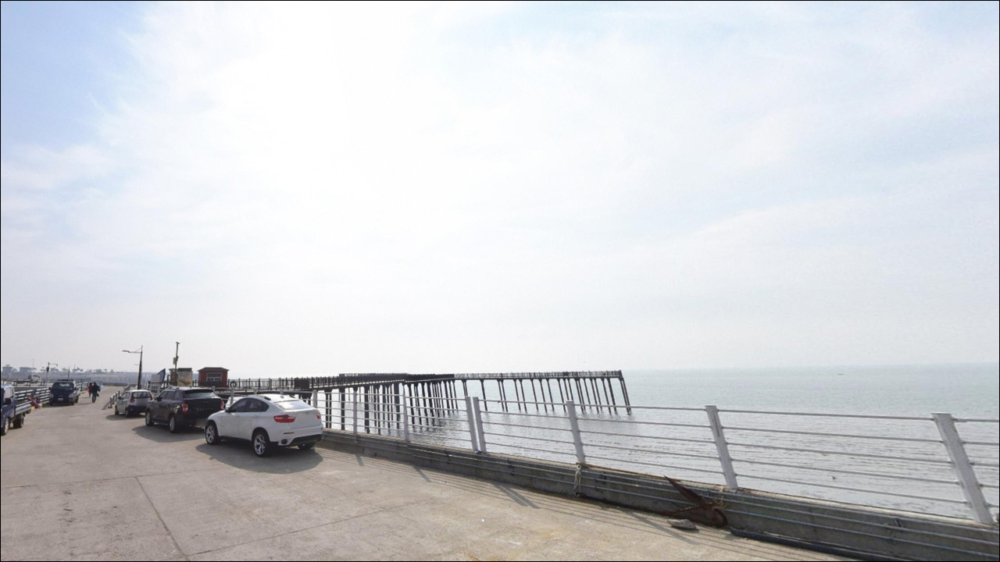
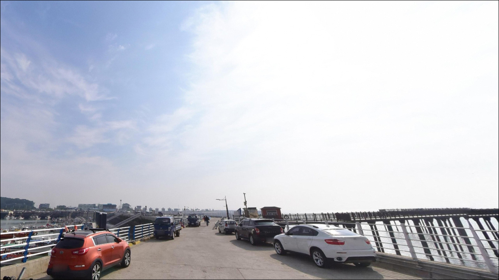
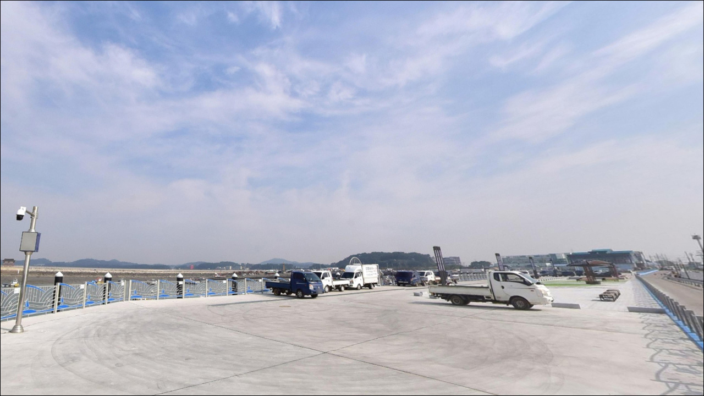
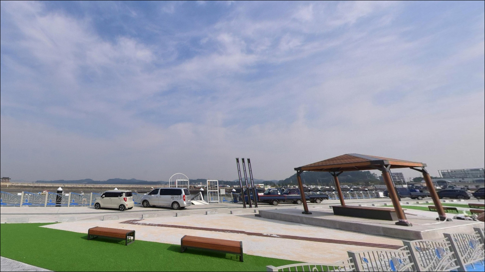
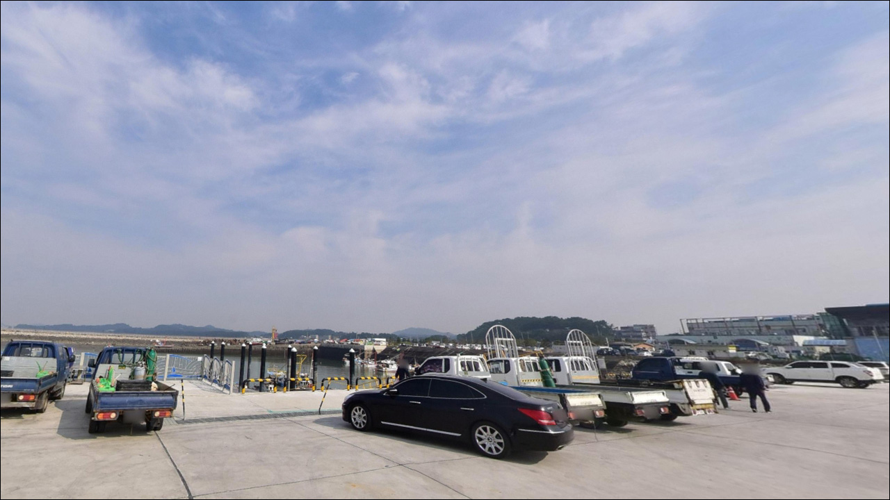
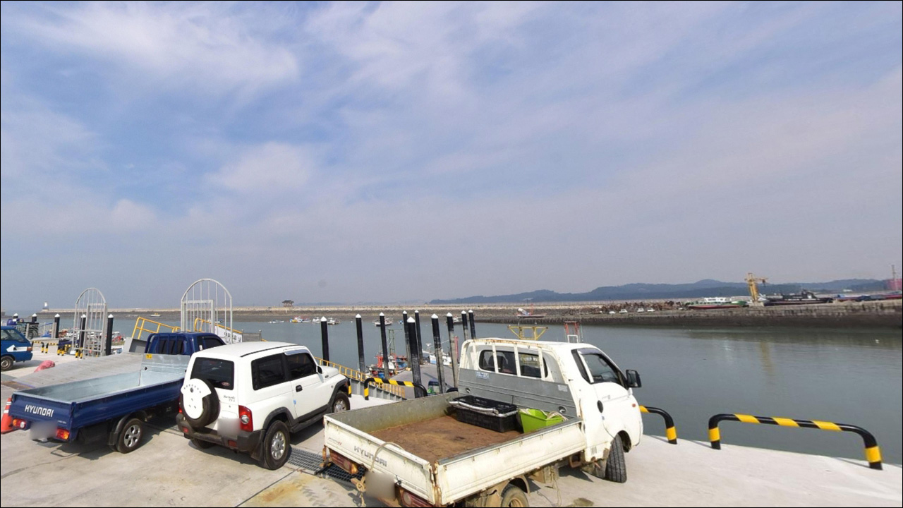

궁평항, 궁평항선착장, 피싱피어 경기 화성시 잔잔한 물결과 어울리는 차박, 낚시 한적한 포인트


포인트 안내
궁평항
경기 화성시 서신면 궁평리 689
피싱피어 개방 여부를 확인하지 않고
궁평항을 찾으면 낚시를 할 수 없는 상황을
맞닥뜨릴 수 있습니다.
피싱피어 외 구역은 공식 낚시 제한 구역으로 지정되어 있어,
피싱피어가 닫혀 있는 상태라면
항 전체에서 낚시 공간을 확보하기 어려운 구조입니다.
이 글은 궁평항의 피싱피어 낚시 여건과 지형 구조,
진입 환경, 차박 체류 조건에 집중합니다.
조황 단정이나 특정 어종 보장은
이 글의 범위에 포함되지 않습니다.

1. 진입 동선과 포인트 접근성
궁평항은 서신면 궁평항로를 따라
항 내부까지 포장도로로 진입이 가능합니다.
왕복 2차선 이상의 도로가 항구 앞까지 이어지는 구조여서
대형 SUV나 캠핑카도 진입에 큰 어려움은 없는 편입니다.
서해안고속도로 비봉IC에서
남양·마도·서신 방향을 경유하는 경로가
가장 일반적인 진입 동선입니다.
주차는 항내 제1~3 공영주차장을 이용합니다.
무료 운영이 확인된 대규모 주차 공간으로
평일 기준으로는 주차 스트레스가 적은 구조입니다.
다만 주말과 낙조 시간대에는 관광객 유입이 집중되어
주차 공간이 빡빡해지는 경향이 있습니다.
낚시 목적이라면 오전 이른 시간 도착이 유리합니다.
항내 공간이 넓어 대형 차량 기준으로도
회차에 큰 어려움은 없는 구조입니다.
어선 이동 동선을 막지 않는 자리 선택이
기본 매너이며, 수산물직판장 인근은
상시 차량 통행이 많은 편입니다.

2. 차박 환경과 야간 체류 여건
궁평항은 수산물직판장·식당·카페 등
관광 인프라가 밀집한 항구형 공간입니다.
야간에도 가로등과 상가 조명이 충분하고
차량·보행 통행이 꾸준하게 이어지는 구조여서
한적한 노지 차박 분위기는 기대하기 어렵습니다.
낚시 후 하룻밤 차량에서 머무는 목적이라면
프라이버시보다 편의성이 강조되는 환경입니다.
조용한 야영 분위기를 원한다면
궁평항보다 한적한 별도 포인트를 찾는 편이
맞는 선택입니다.
궁평리 해수욕장 인근에 민간 유료 차박 공간이
운영 중이라는 후기가 있으나,
현황은 방문 전 직접 확인이 필요합니다.
외항을 향해 열린 방파제 구조상
서풍이 강한 날에는 바람 영향을 받는 편입니다.
기상 예보를 미리 확인하고
바람 방향에 따라 주차 위치를 조정하는 것이
현장 체류 여건을 안정시키는 방법입니다.


3. 주변 편의시설 및 인프라 현황
궁평항 수산물직판장은
오전 8시부터 오후 10시까지 운영이 확인됩니다.
활어와 해산물 구입이 항내에서 가능하며,
푸드트럭과 식당에서 식사도 해결할 수 있는 구조입니다.
별도 식재료 준비 없이도 현장에서
끼니를 해결할 수 있는
드문 편의성을 갖춘 낚시 포인트입니다.
반경 3km 서신면 소재지 방향에도
편의점과 소규모 마트가 위치하고 있습니다.
낚시 소품·얼음·생미끼가 필요하다면
출발 전 항내 낚시점 운영 여부를
미리 확인하는 편이 효율적입니다.
응급 상황 시에도 화성 시내까지
도로 인프라가 잘 연결되어 있어
고립된 도서·오지 포인트에 비해
의료 접근성이 양호한 편입니다.
연료와 기본 비상 물품은 출발 전 갖추는 것이
기본이지만, 부족한 소품은 서신면 소재지에서
보충 가능한 동선입니다.

4. 방문 전 반드시 확인해야 할 피싱피어 개방 여부
궁평항 방문에서 가장 먼저 확인할 것은
피싱피어 개방 여부입니다.
피싱피어는 안전등급 판정으로 폐쇄된 이력이 있으며,
재개방 시점은 화성시 행정 일정에 따라 달라집니다.
궁평 어촌체험마을 안내소(031-356-7339)에
출발 전 전화 문의하거나,
검색으로 최신 현황을 확인하는 것이 기본 절차입니다.
서해 특성상 조수간만의 차가 크므로
물때 확인도 필수입니다.
바다타임에서 화성 서신면 기준 물때를 확인하고,
조금 전후 및 초들물·초썰물 구간이
입질이 집중되는 경향이 있는 타이밍입니다.
사리 전후에는 물살이 강해져
채비 컨트롤이 어려워지는 경우가 생깁니다.
피싱피어 구조상 뜰채는 반드시 챙겨야 합니다.
수면에서 데크까지 높이가 있는 잔교형 구조이므로
뜰채 없이는 물고기를 올리기 어렵습니다.
피싱피어 1인 1대 제한 규정이 있으며,
기상특보 발령 시 즉시 통제될 수 있으므로
당일 기상 예보도 출발 직전 다시 확인하는 것이
기본 준비입니다.

5. 지형 기반 낚시 여건 분석
궁평항의 핵심 낚시 공간은
바다 쪽으로 193m 뻗은 잔교형 데크,
피싱피어입니다.
피싱피어란 육지에서 바다 위로 길게 뻗어 나온
잔교형 구조물로, 선상 출조 없이
깊은 수심에서 낚시할 수 있도록
서해 간조 시에도 피싱피어 끝단과
방파제 수로 입구 쪽은 일정 수준 이상의
수심이 유지되는 것으로 보입니다.
방파제 끝단 부근은 조류 흐름이
강해지는 구간으로 추정됩니다.
조수간만의 차가 큰 서해 특성상
조금 전후 및 초들물·초썰물 타이밍이
이 포인트의 기본 공략 기준입니다.
사리 전후에는 물살이 세져
무거운 봉돌로도 채비를 고정하기 어려운
상황이 생길 수 있습니다.
내항 쪽은 수면이 잔잔하고 수심도 얕은 편이라
외항·피싱피어 쪽과 조건이 확연히 다릅니다.
현장 낚시 가능 구역은 표지판을 먼저 확인하고,
최신 조황은 가기 전에 꼭 검색해 보시기 바랍니다.


6. 피싱피어에서 어울리는 낚시 스타일
숭어 떡밥낚시가 이 포인트를 대표하는 방식입니다.
피싱피어 양쪽 끝 파고라 구간은
숭어낚시 자리 경쟁이 치열하다는 후기가
여럿 확인될 만큼 입질이 활발한 구간으로 알려져 있습니다.
봄철과 초여름 숭어 시즌에
집어재 떡밥 채비로 정조 전후를 노리는
방식이 지형 조건과 잘 맞습니다.
원투낚시는 피싱피어에서 생미끼를 멀리 던지는 방식이
어울립니다.
붕장어·보리멸이 기대해 볼 수 있는 어종이며,
광어도 피싱피어 원투 시 간헐적으로
올라온다는 후기가 있습니다.
데크 높이가 있는 구조상
뜰채는 반드시 지참해야 합니다.
9~10월은 전어·주꾸미·갑오징어 배낚시 성수기로
항내에서 출조 선박이 운항되는 시기입니다.
숭어·망둥어·놀래미·우럭이
이 항의 지형 조건에서 기대해 볼 수 있는 어종으로
복수의 경로에서 언급됩니다.
루어낚시는 피싱피어 외 구역의
낚시 가능 여부를 현장에서 먼저 확인한 뒤
시도해야 합니다.

7. 피싱피어가 여의치 않을 때 이동할 대안 포인트
피싱피어 폐쇄 상태이거나
자리 경쟁이 심할 경우
전곡항이 가장 현실적인 대안입니다.
화성시 서신면 내에 위치하며
같은 해안선의 물때 패턴이 그대로 적용되는
항구형 방파제 포인트입니다.
규모가 크고 방파제 낚시가 가능한 구조로
궁평항이 여의치 않을 때
동선상 첫 번째 선택지가 됩니다.
탄도항은 안산시 단원구 방면으로
숭어와 망둥어 권역으로 함께 언급되는 포인트입니다.
조용한 분위기를 원한다면
궁평항보다 한결 한적한 편이며,
차박 체류 여건도 상대적으로
프라이버시 확보가 용이한 환경으로 보입니다.
제부도는 화성 서신 해안선 권역에서
빠질 수 없는 대표 이름이지만,
물때에 따라 진입 도로가 열리고 닫히는 구조입니다.
낚시보다 관광 성격이 강한 곳으로,
낚시가 주목적이라면 전곡항·탄도항을
먼저 고려하는 편이 효율적입니다.

피싱피어 개방 여부가 궁평항 낚시의
출발점이자 전제 조건입니다
원투낚시나 숭어낚시를 즐기면서
수도권에서 당일치기 서해 낚시를 원하는 낚시인이라면
궁평항의 지형 조건은 잘 맞는 구조입니다.
무료 주차에 식사·장보기까지 현장 해결이 가능한
편의성은 서해 방파제 포인트 중
손에 꼽히는 수준입니다.
다만 피싱피어 개방 여부가
낚시 가능 여부를 사실상 결정하는 구조입니다.
피싱피어 개방 확인, 물때 파악, 뜰채 챙기기,
이 세 가지를 갖추고 출발해야
궁평항을 제대로 활용할 수 있습니다.
조용한 낚시와 차박을 함께 원한다면
전곡항이나 탄도항이 더 맞는 선택일 수 있습니다.
낚시와 서해 낙조, 수산물까지
한 번에 즐기는 나들이 겸 출조라면
궁평항이 그에 걸맞은 곳입니다.